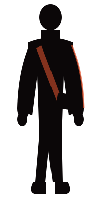
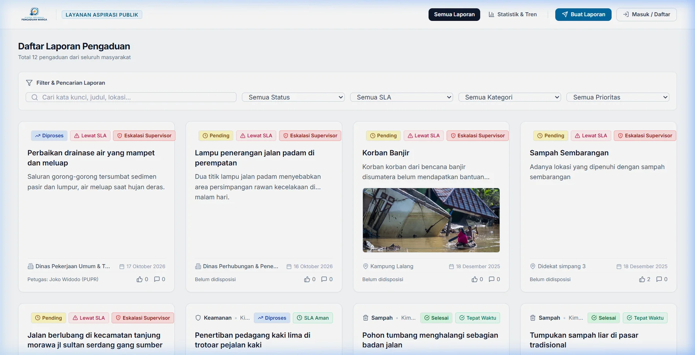
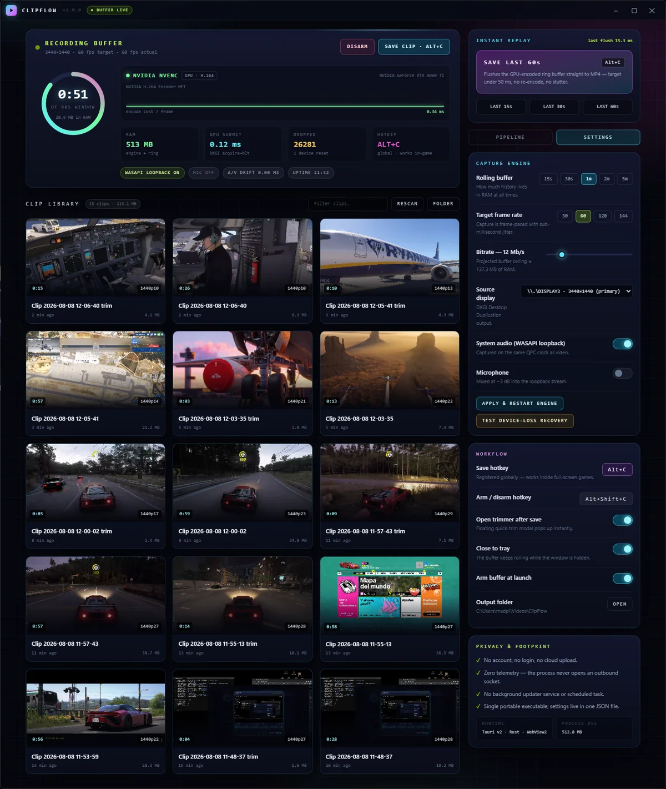
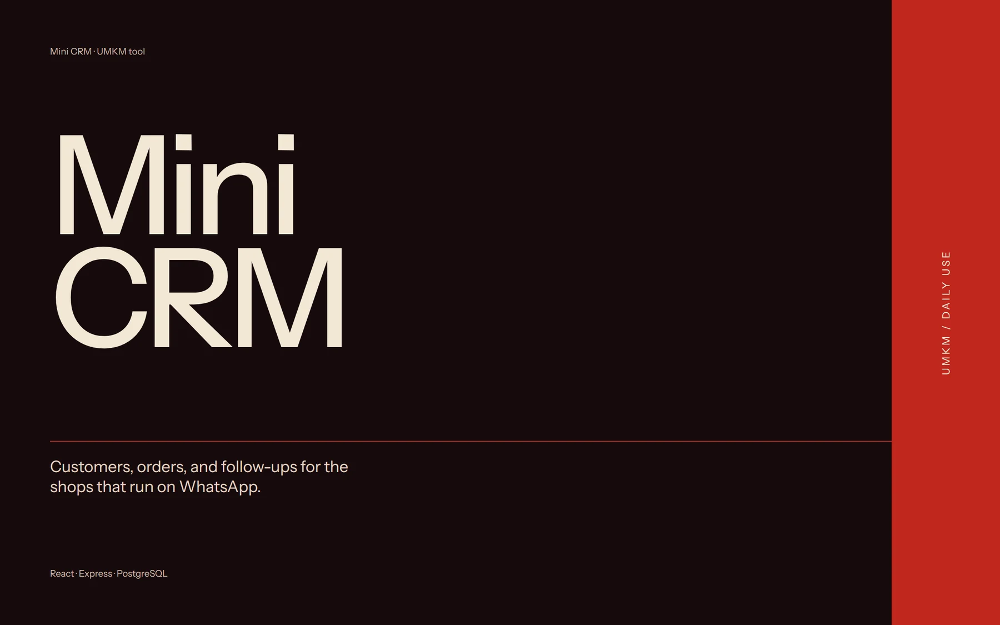
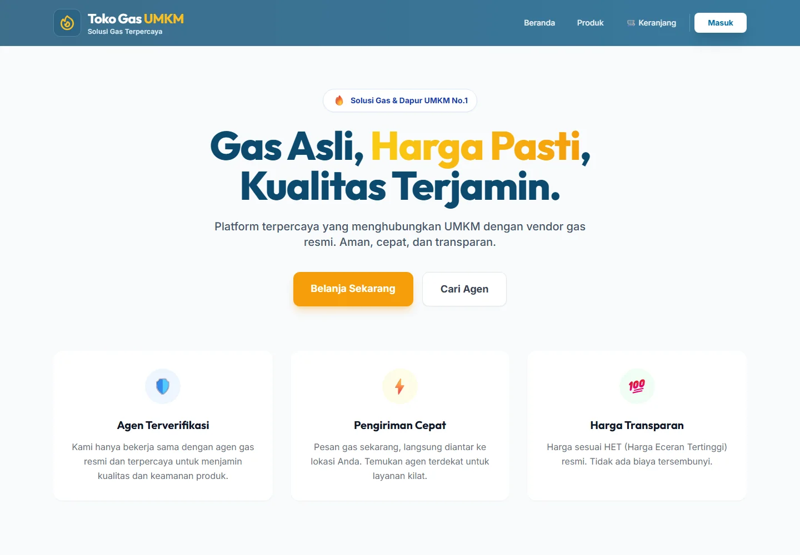
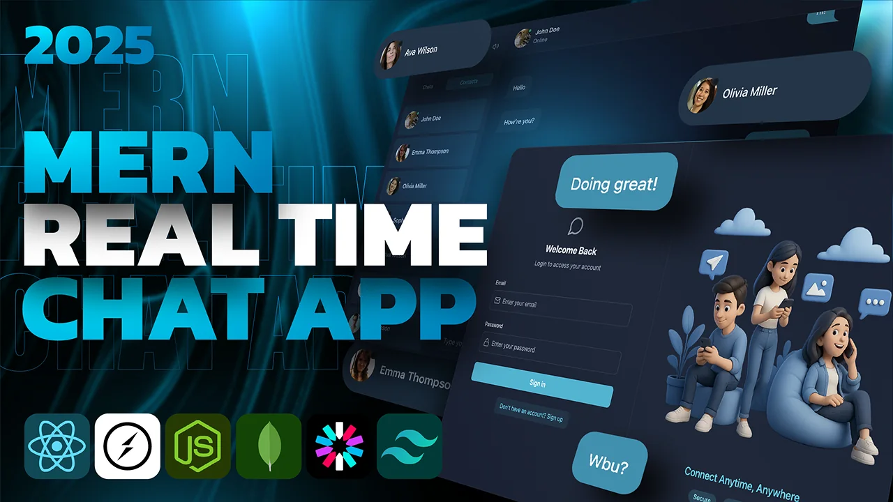
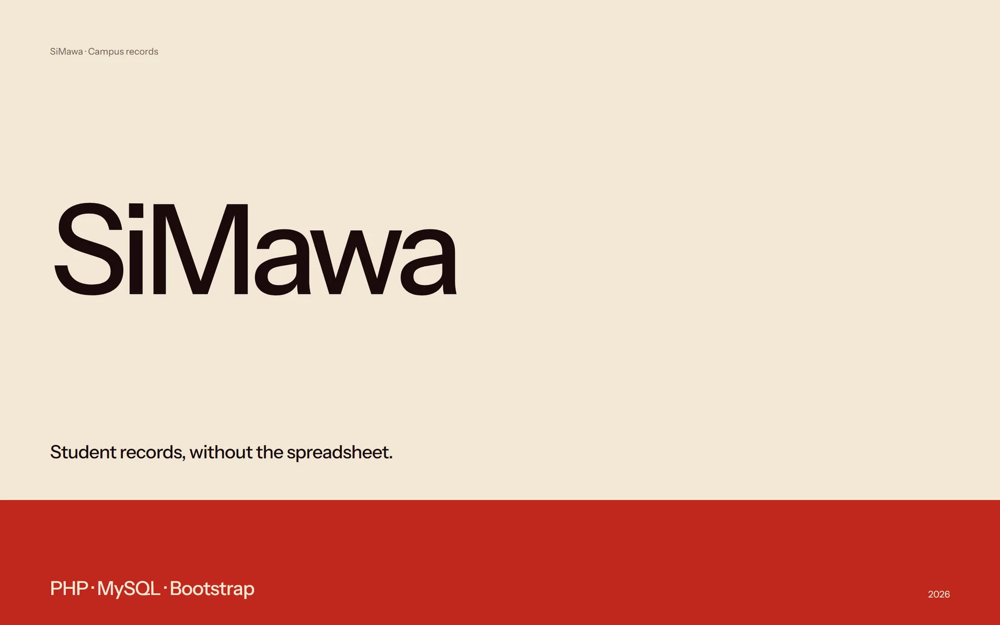
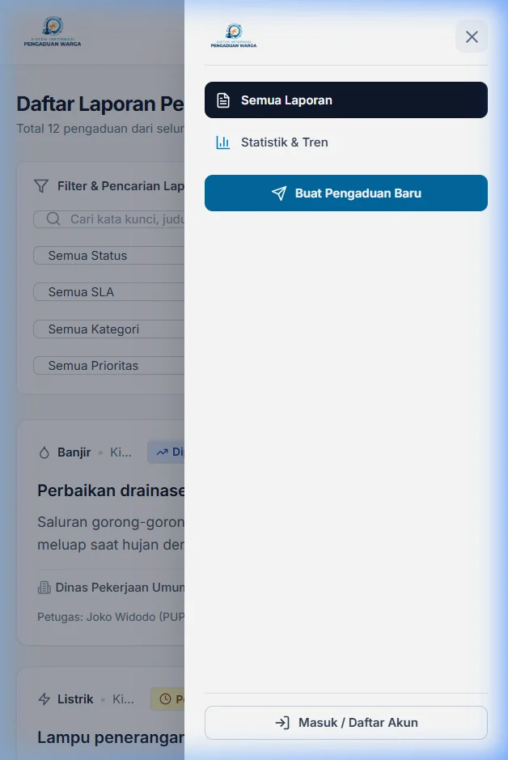
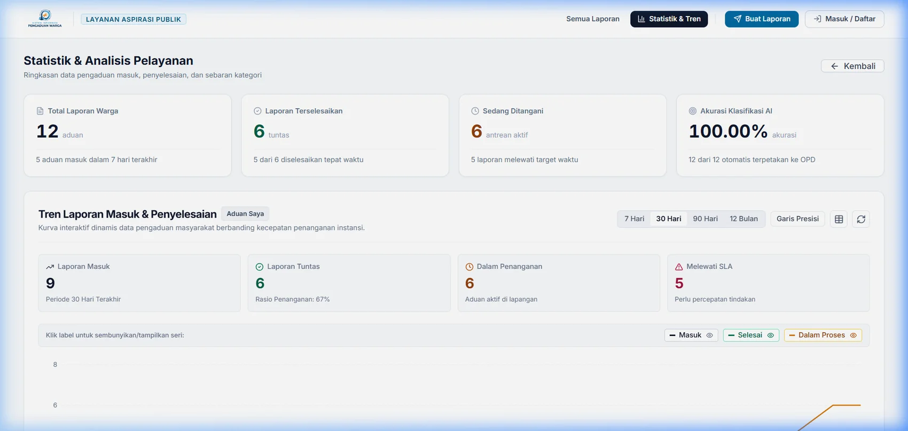
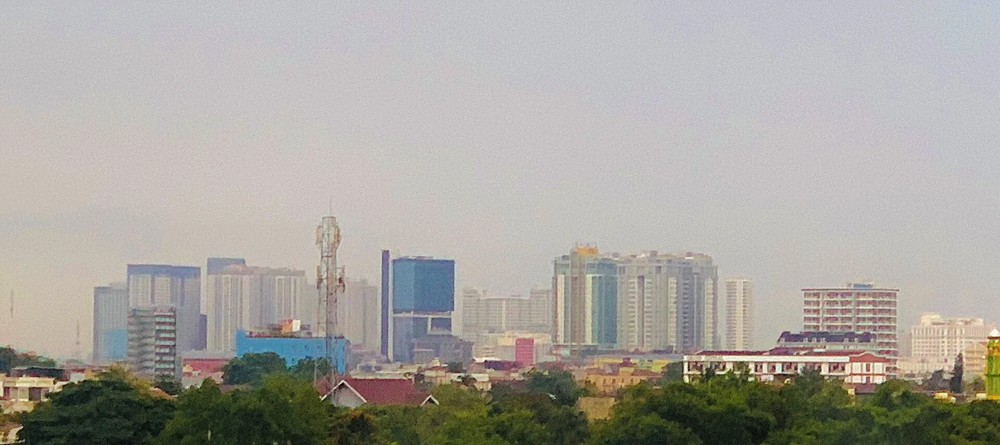

SIPW
A public complaint system for Medan’s city agencies: map reports, SLA tracking, and an AI triage layer that fails safe.
React · Node · PostgreSQL · LLM
View repository
Rafif Syandana builds civic tools, small-business systems, and interfaces that hold up outside the demo.
I build the unglamorous parts: resilient forms, follow-ups that don’t get lost, reports that reach the right desk.
Counted from GitHub, October 2026.
See the systemsSix systems, built end to end. A look at the interfaces; the rest are in the repos.

A public complaint system for Medan’s city agencies: map reports, SLA tracking, and an AI triage layer that fails safe.
Hover, tap, or use ↑ ↓ to switch.
A public complaint system for Medan’s city agencies: map reports, SLA tracking, and an AI triage layer that fails safe.
React · Node · PostgreSQL · LLM
View repository
A rolling replay buffer that saves the last 120 seconds of gameplay without leaving the game.
Rust · Tauri · D3D11 · WASAPI
View repository
Customers, orders, and follow-ups for one-person shops, with WhatsApp built into the workflow.
React · Express · PostgreSQL
View repository
A live storefront for a gas vendor: catalog, cart, QRIS, and a WhatsApp handoff at checkout.
React · Node · MongoDB · Midtrans
Visit live site Repo
A chat and file-sharing app with presence, uploads, and email onboarding.
React · Socket.io · MongoDB
View repository
Student records for a university course, with photo uploads and print-ready exports.
PHP · MySQL · Bootstrap
View repositoryAlso in the repos: PocoTimer, handTracker3Dvoxel, and a few smaller experiments.
More on GitHubSIPW is a public complaint system for Medan’s city agencies. Residents drop a pin, attach a photo, and follow the report from verification to completion. Behind it, an AI triage layer routes each complaint to the right office — and gets out of the way when it isn’t sure.
The AI is allowed to be unsure. The report is not allowed to be lost.
Built with React, Node, PostgreSQL, Leaflet, Recharts, and a DeepSeek-based classification layer.
The AI can be offline. The report still saves.
Read the repo

I’m Rafif Syandana, a software and web developer in Medan. I study at UIN Sumatera Utara and build web systems for civic services, small businesses, and the occasional Windows utility.
Most of my work starts with a messy process and ends with a screen that makes it feel simple. I care about the quiet parts: validation, empty states, failure paths, and the person on the other side of the form.

The stack changes with the problem. These are the tools I reach for most.
React, TypeScript, Tailwind, Vite, Three.js, Leaflet, Recharts
Node/Express, PHP, Python, Rust, Socket.io, JWT
PostgreSQL, MySQL, MongoDB, ExcelJS
Vercel, XAMPP, Cloudinary, Midtrans, Tauri
This site is hand-written HTML, CSS, and JavaScript. No framework, no build step.
Hero art generated with Gemini through 9Router.
Have a messy process, a small business, or a civic service that needs a better screen? I’d like to hear about it.